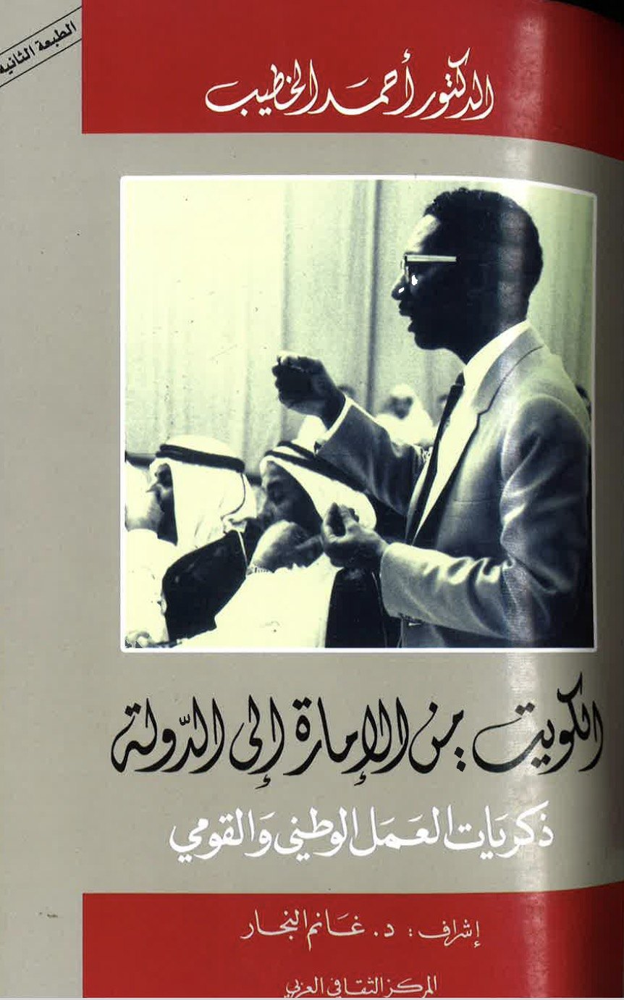

Memoir, second edition · Book pages, Dr Ahmad Al-Khatib, Al-Kuwait min Al-Imara ila Al-Dawla: Dhikrayat Al-Amal Al-Watani wal-Qawmi, edited by Dr Ghanem Al-Najjar, Arab Cultural Centre, second edition
Dr Ahmad Al-Khatib’s memoirs: Jassim Al-Qatami in the national movement
What it is
The memoir of Dr Ahmad Al-Khatib, who worked beside Jassim Al-Qatami for decades. In London the two shared a flat while Jassim finished his police course, and Al-Khatib asked Saad Al-Abdullah to have him named Director of Police (pages 110 to 113). Jassim was with him at Al-Jawhara when Sheikh Abdullah Al-Salem spoke of a constitution for Kuwait (page 112). He represented Kuwait at the founding meeting in Cairo of the Afro-Asian peoples’ solidarity movement, which the memoir dates 1954, and during the Iraqi occupation he and Al-Khatib represented Kuwait at the World Peace Council in Turkey (pages 154 and 155). Pages 162 and 163 tell of his resignation as Director General of Police during the 1956 Suez demonstrations, under the slogan «the police in the service of the people», print his letter to Sheikh Sabah Al-Salem, and name the officers who resigned with him. Page 164 lists him first on the founding committee of the Kuwaiti Association in 1958. In 1958 in Baghdad he kept pressing Abdulkarim Qasim on his stand on unity (pages 201 and 202). His speech at the Shuwaikh Secondary festival for the first anniversary of the Egyptian and Syrian union angered the ruler; he was summoned to Public Security and the cinema company he managed was made to dismiss him (pages 200 and 202 to 204). Page 208 prints the members’ resignation of 7 December 1965, signed by Jassim Abdulaziz Al-Qatami among others. After the 1961 reconciliation he was appointed the first Under-Secretary of Foreign Affairs and charged with setting up the ministry (page 218). Page 261 records the detention of Yacoub Yousef Al-Qatami in 1956 when he tried to stop the police from harming women demonstrators, and Sabah Al-Salem’s close tie with Jassim. The chapter after page 294 and page 309 cover the 1965 and 1967 crises, and page 347 shows him in a photograph of the first National Assembly. Page 56 names Abdullatif Al-Qatami among the Kuwaiti students of Al-Khatib’s school days.
Why it matters
A first hand account by a close colleague of Jassim Al-Qatami’s police, diplomatic and political life, with mentions of Yacoub Yousef and Abdullatif Al-Qatami.
Page copies


Notes
Only the first pages are shown here. Family members who sign in can see all 22 pages.
Others named
Sources
Dr Ahmad Al-Khatib, Al-Kuwait min Al-Imara ila Al-Dawla: Dhikrayat Al-Amal Al-Watani wal-Qawmi, ed. Dr Ghanem Al-Najjar, Arab Cultural Centre, second edition, pages 10, 56, 110 to 113, 154, 155, 162 to 164, 200 to 204, 208, 218, 261, 295, 309 and 347
How this text was made: A memoir written long after the events, not a record of the time. The year of this edition is not on the pages sent. Pages sent that do not name the family are not included. The page after 294 has no printed number.
Open in the interactive site